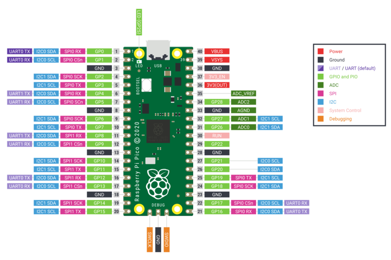

Quick reference for the RP2¶
{kind=link}
The Raspberry Pi Pico Development Board (image attribution: Raspberry Pi Foundation).
Below is a quick reference for Raspberry Pi RP2xxx boards. If it is your first time working with this board it may be useful to get an overview of the microcontroller:
Installing MicroPython¶
See the corresponding section of tutorial: Getting started with MicroPython on the RP2xxx. It also includes a troubleshooting subsection.
General board control¶
The MicroPython REPL is accessed via the USB serial port. Tab-completion is useful to find out what methods an object has. Paste mode (ctrl-E) is useful to paste a large slab of Python code into the REPL.
The machine module:
import machine
machine.freq() # get the current frequency of the CPU
machine.freq(240000000) # set the CPU frequency to 240 MHz
The rp2 module:
import rp2
Delay and timing¶
Use the time module:
import time
time.sleep(1) # sleep for 1 second
time.sleep_ms(500) # sleep for 500 milliseconds
time.sleep_us(10) # sleep for 10 microseconds
start = time.ticks_ms() # get millisecond counter
delta = time.ticks_diff(time.ticks_ms(), start) # compute time difference
Timers¶
RP2040’s system timer peripheral provides a global microsecond timebase and generates interrupts for it. The software timer is available currently, and there are unlimited number of them (memory permitting). There is no need to specify the timer id (id=-1 is supported at the moment) as it will default to this.
Use the machine.Timer class:
from machine import Timer
tim = Timer(period=5000, mode=Timer.ONE_SHOT, callback=lambda t:print(1))
tim.init(period=2000, mode=Timer.PERIODIC, callback=lambda t:print(2))
Pins and GPIO¶
Use the machine.Pin class:
from machine import Pin
p0 = Pin(0, Pin.OUT) # create output pin on GPIO0
p0.on() # set pin to "on" (high) level
p0.off() # set pin to "off" (low) level
p0.value(1) # set pin to on/high
p2 = Pin(2, Pin.IN) # create input pin on GPIO2
print(p2.value()) # get value, 0 or 1
p4 = Pin(4, Pin.IN, Pin.PULL_UP) # enable internal pull-up resistor
p5 = Pin(5, Pin.OUT, value=1) # set pin high on creation
Programmable IO (PIO)¶
PIO is useful to build low-level IO interfaces from scratch. See the rp2 module
for detailed explaination of the assembly instructions.
Example using PIO to blink an LED at 1Hz:
from machine import Pin
import rp2
@rp2.asm_pio(set_init=rp2.PIO.OUT_LOW)
def blink_1hz():
# Cycles: 1 + 7 + 32 * (30 + 1) = 1000
set(pins, 1)
set(x, 31) [6]
label("delay_high")
nop() [29]
jmp(x_dec, "delay_high")
# Cycles: 1 + 7 + 32 * (30 + 1) = 1000
set(pins, 0)
set(x, 31) [6]
label("delay_low")
nop() [29]
jmp(x_dec, "delay_low")
# Create and start a StateMachine with blink_1hz, outputting on Pin(25)
sm = rp2.StateMachine(0, blink_1hz, freq=2000, set_base=Pin(25))
sm.active(1)
UART (serial bus)¶
There are two UARTs, UART0 and UART1. UART0 can be mapped to GPIO 0/1, 12/13 and 16/17, and UART1 to GPIO 4/5 and 8/9.
See machine.UART.
from machine import UART, Pin
uart1 = UART(1, baudrate=9600, tx=Pin(4), rx=Pin(5))
uart1.write('hello') # write 5 bytes
uart1.read(5) # read up to 5 bytes
备注
REPL over UART is disabled by default. You can see the Getting started with MicroPython on the RP2xxx for details on how to enable REPL over UART.
PWM (pulse width modulation)¶
There are 8 independent channels each of which have 2 outputs making it 16 PWM channels in total which can be clocked from 7Hz to 125Mhz.
Use the machine.PWM class:
from machine import Pin, PWM
pwm0 = PWM(Pin(0)) # create PWM object from a pin
pwm0.freq() # get current frequency
pwm0.freq(1000) # set frequency
pwm0.duty_u16() # get current duty cycle, range 0-65535
pwm0.duty_u16(200) # set duty cycle, range 0-65535
pwm0.deinit() # turn off PWM on the pin
ADC (analog to digital conversion)¶
RP2040 has five ADC channels in total, four of which are 12-bit SAR based ADCs: GP26, GP27, GP28 and GP29. The input signal for ADC0, ADC1, ADC2 and ADC3 can be connected with GP26, GP27, GP28, GP29 respectively (On Pico board, GP29 is connected to VSYS). The standard ADC range is 0-3.3V. The fifth channel is connected to the in-built temperature sensor and can be used for measuring the temperature.
Use the machine.ADC class:
from machine import ADC, Pin
adc = ADC(Pin(26)) # create ADC object on ADC pin
adc.read_u16() # read value, 0-65535 across voltage range 0.0v - 3.3v
Software SPI bus¶
Software SPI (using bit-banging) works on all pins, and is accessed via the machine.SoftSPI class:
from machine import Pin, SoftSPI
# construct a SoftSPI bus on the given pins
# polarity is the idle state of SCK
# phase=0 means sample on the first edge of SCK, phase=1 means the second
spi = SoftSPI(baudrate=100_000, polarity=1, phase=0, sck=Pin(0), mosi=Pin(2), miso=Pin(4))
spi.init(baudrate=200000) # set the baudrate
spi.read(10) # read 10 bytes on MISO
spi.read(10, 0xff) # read 10 bytes while outputting 0xff on MOSI
buf = bytearray(50) # create a buffer
spi.readinto(buf) # read into the given buffer (reads 50 bytes in this case)
spi.readinto(buf, 0xff) # read into the given buffer and output 0xff on MOSI
spi.write(b'12345') # write 5 bytes on MOSI
buf = bytearray(4) # create a buffer
spi.write_readinto(b'1234', buf) # write to MOSI and read from MISO into the buffer
spi.write_readinto(buf, buf) # write buf to MOSI and read MISO back into buf
警告
Currently all of sck, mosi and miso must be specified when
initialising Software SPI.
Hardware SPI bus¶
The RP2040 has 2 hardware SPI buses which is accessed via the machine.SPI class and has the same methods as software SPI above:
from machine import Pin, SPI
spi = SPI(1, 10_000_000) # Default assignment: sck=Pin(10), mosi=Pin(11), miso=Pin(8)
spi = SPI(1, 10_000_000, sck=Pin(14), mosi=Pin(15), miso=Pin(12))
spi = SPI(0, baudrate=80_000_000, polarity=0, phase=0, bits=8, sck=Pin(6), mosi=Pin(7), miso=Pin(4))
Software I2C bus¶
Software I2C (using bit-banging) works on all output-capable pins, and is accessed via the machine.SoftI2C class:
from machine import Pin, SoftI2C
i2c = SoftI2C(scl=Pin(5), sda=Pin(4), freq=100_000)
i2c.scan() # scan for devices
i2c.readfrom(0x3a, 4) # read 4 bytes from device with address 0x3a
i2c.writeto(0x3a, '12') # write '12' to device with address 0x3a
buf = bytearray(10) # create a buffer with 10 bytes
i2c.writeto(0x3a, buf) # write the given buffer to the peripheral
Hardware I2C bus¶
The driver is accessed via the machine.I2C class and has the same methods as software I2C above:
from machine import Pin, I2C
i2c = I2C(0) # default assignment: scl=Pin(9), sda=Pin(8)
i2c = I2C(1, scl=Pin(3), sda=Pin(2), freq=400_000)
I2S bus¶
See machine.I2S.
from machine import I2S, Pin
i2s = I2S(0, sck=Pin(16), ws=Pin(17), sd=Pin(18), mode=I2S.TX, bits=16, format=I2S.STEREO, rate=44100, ibuf=40000) # create I2S object
i2s.write(buf) # write buffer of audio samples to I2S device
i2s = I2S(1, sck=Pin(0), ws=Pin(1), sd=Pin(2), mode=I2S.RX, bits=16, format=I2S.MONO, rate=22050, ibuf=40000) # create I2S object
i2s.readinto(buf) # fill buffer with audio samples from I2S device
The ws pin number must be one greater than the sck pin number.
The I2S class is currently available as a Technical Preview. During the preview period, feedback from users is encouraged. Based on this feedback, the I2S class API and implementation may be changed.
Two I2S buses are supported with id=0 and id=1.
Real time clock (RTC)¶
See machine.RTC
from machine import RTC
rtc = RTC()
rtc.datetime((2017, 8, 23, 2, 12, 48, 0, 0)) # set a specific date and
# time, eg. 2017/8/23 1:12:48
rtc.datetime() # get date and time
WDT (Watchdog timer)¶
The RP2040 has a watchdog which is a countdown timer that can restart parts of the chip if it reaches zero.
See machine.WDT.
from machine import WDT
# enable the WDT with a timeout of 5s (1s is the minimum)
wdt = WDT(timeout=5000)
wdt.feed()
OneWire driver¶
The OneWire driver is implemented in software and works on all pins:
from machine import Pin
import onewire
ow = onewire.OneWire(Pin(12)) # create a OneWire bus on GPIO12
ow.scan() # return a list of devices on the bus
ow.reset() # reset the bus
ow.readbyte() # read a byte
ow.writebyte(0x12) # write a byte on the bus
ow.write('123') # write bytes on the bus
ow.select_rom(b'12345678') # select a specific device by its ROM code
There is a specific driver for DS18S20 and DS18B20 devices:
import time, ds18x20
ds = ds18x20.DS18X20(ow)
roms = ds.scan()
ds.convert_temp()
time.sleep_ms(750)
for rom in roms:
print(ds.read_temp(rom))
Be sure to put a 4.7k pull-up resistor on the data line. Note that
the convert_temp() method must be called each time you want to
sample the temperature.
NeoPixel and APA106 driver¶
Use the neopixel and apa106 modules:
from machine import Pin
from neopixel import NeoPixel
pin = Pin(0, Pin.OUT) # set GPIO0 to output to drive NeoPixels
np = NeoPixel(pin, 8) # create NeoPixel driver on GPIO0 for 8 pixels
np[0] = (255, 255, 255) # set the first pixel to white
np.write() # write data to all pixels
r, g, b = np[0] # get first pixel colour
The APA106 driver extends NeoPixel, but internally uses a different colour order:
from apa106 import APA106
ap = APA106(pin, 8)
r, g, b = ap[0]
APA102 (DotStar) uses a different driver as it has an additional clock pin.